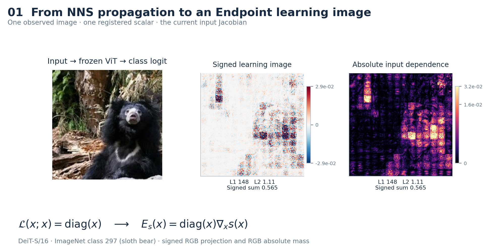
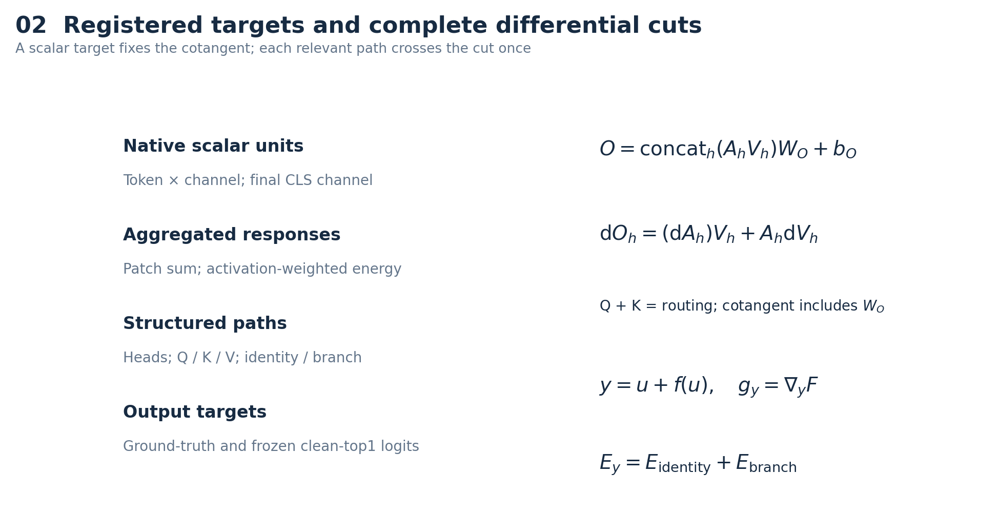
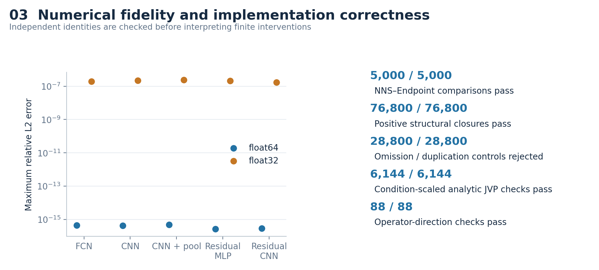
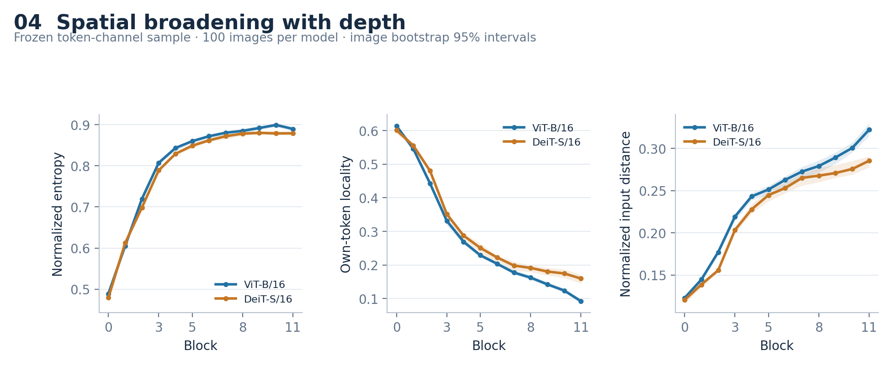
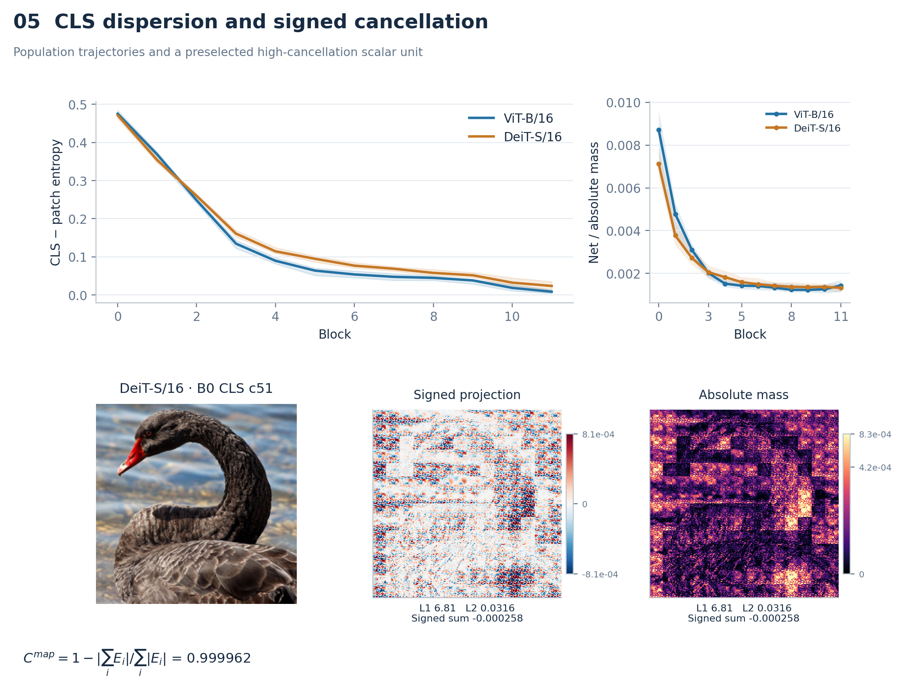
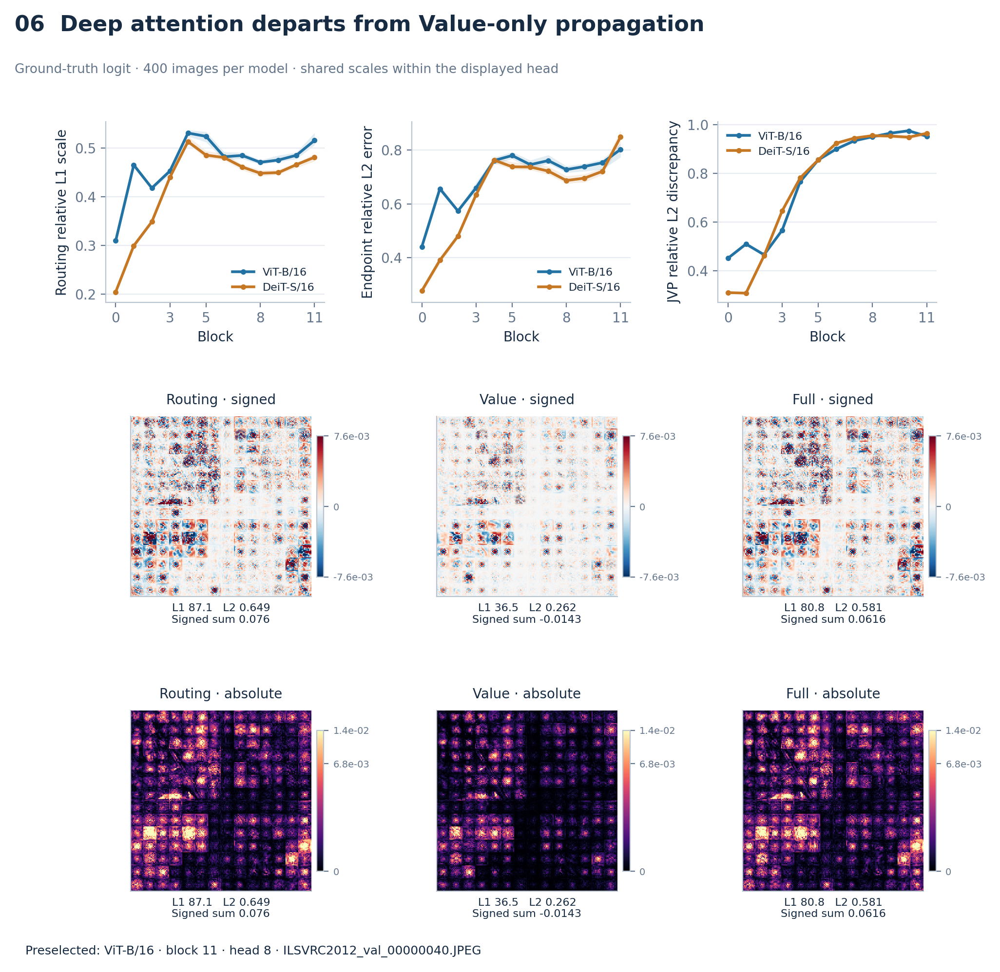
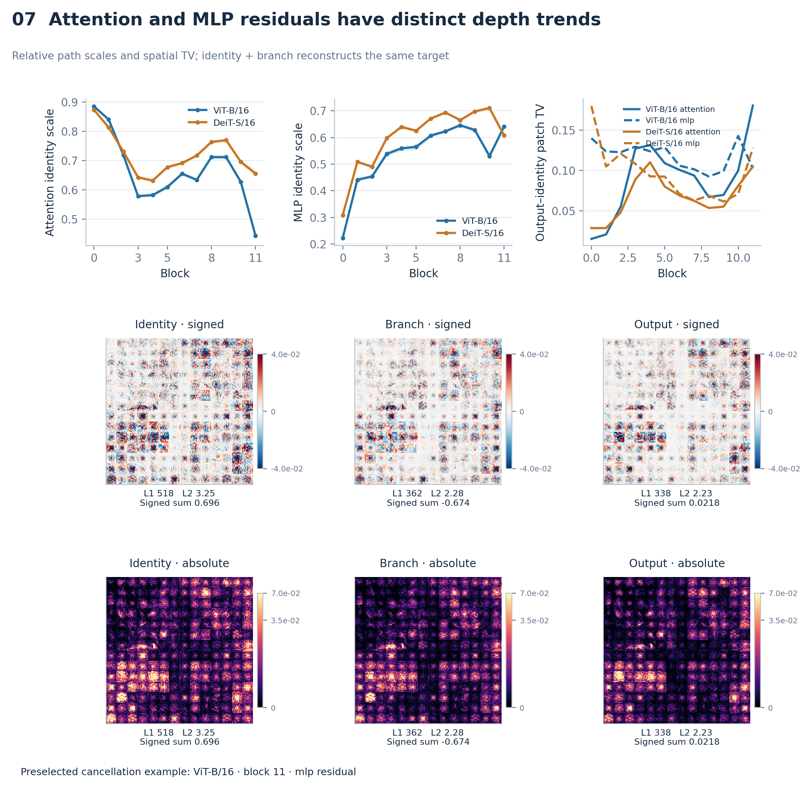
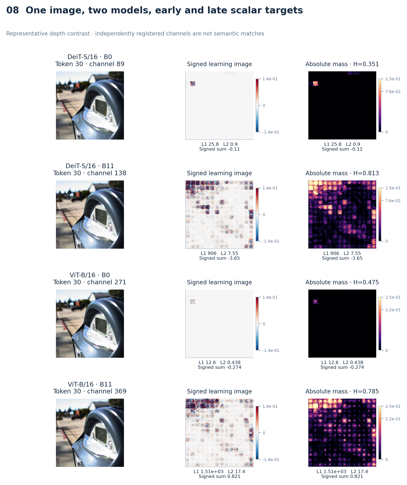
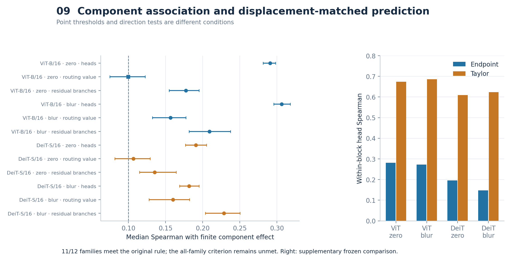
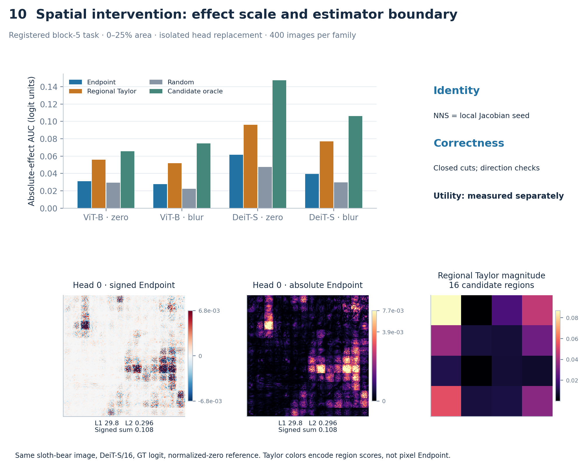

Figure 1: nns endpoint

NNS identity with signed and absolute class-logit maps.
PDF · SVGTen publication figures · signed and absolute maps · preserved R2 sources

NNS identity with signed and absolute class-logit maps.
PDF · SVG
Scalar hierarchy, attention output projection and correct residual-output cotangent.
PDF · SVG
Five-network equivalence and independent structural/directional coverage.
PDF · SVG
Three complementary spatial trajectories from the frozen stratified sample.
PDF · SVG
CLS/patch entropy, surviving signed mass and a signed/absolute cancellation case.
PDF · SVG
Depth curves with a shared-scale signed/absolute routing, value and full head example.
PDF · SVG
Residual depth trends and a common-scale high-cancellation identity/branch example.
PDF · SVG
Four scalar targets on one frozen image, with shared early/late scales within each model.
PDF · SVG
Original C4a family intervals and separately frozen within-block Endpoint/Taylor head comparisons.
PDF · SVG
Absolute AUC including evaluated-candidate oracle, signed/absolute Endpoint and regional Taylor magnitude.
PDF · SVG